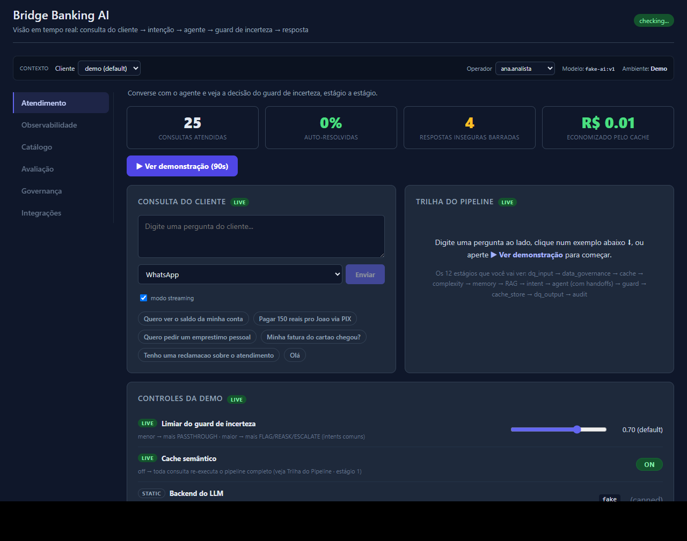
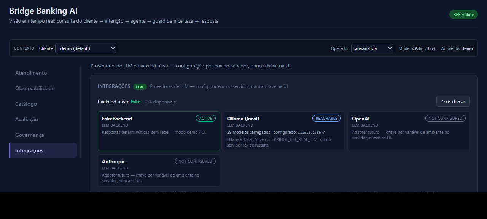

Bridge turns every LLM answer into calibrated, hash-chained SR 11-7 / EU AI Act validation evidence — the reproducible, machine-readable artifact your model-risk team files instead of hand-writing a Word doc. It drops into the GRC tool you already own.
Built on the open-source lub engine (Apache-2.0). Also runs your chat and voice in production — the same governed pipeline, fully evidenced.
Your AI shouldn't be a dozen disconnected tools. Bridge is the one layer every answer passes through — typed or spoken.
One pipeline does the whole job — connect, ground, govern, deliver and observe.
OpenAI, Anthropic, Azure or a local model. Swap providers anytime — nothing downstream changes.
model-agnosticWhatsApp, the app, web chat and the call center — all running through one governed pipeline.
omnichannelTake phone calls, transcribe speech to text, then answer or route. Voice gets the exact same guard as chat.
speech → textAnswers cite your manuals, policies and regulations (RAG) — not the model's guesswork.
RAG · citationsAn uncertainty guard on every answer, PII masked before the model (LGPD), and an append-only audit trail (BCB) mapped to SR 11-7.
guard · LGPD · auditLive metrics, per-stage traces of every request, and AI-visibility monitoring of how your brand shows up across the models.
metrics · visibilityNot a mockup — real screenshots of Bridge: live metrics, the customer pipeline, and your model & channel connections.


Real screenshots of the Bridge console today (Next.js + FastAPI), shown in its Portuguese demo mode. The orange demo banner is cropped; everything else is the live UI.
From a customer's question — typed or spoken — to a safe answer, in one pass.
A message or phone call comes in — WhatsApp, app, web or the call center. Voice is transcribed to text.
Personal data is masked, the question is grounded in your documents, and it's routed to the right-sized model.
Confident → reply. Unsure → ask again or hand off to a human. No guessing in front of a customer.
Each step becomes a reproducible, audit-ready record your risk team can file — automatically.
Under the hood: 12 audited stages — data quality, governance, cache, routing, retrieval, the guard and the audit trail — each one a real, tested module.
The values your risk, operations and finance teams can point to.
Every low-confidence answer — chat or voice — is held back or escalated instead of bluffed. Your AI stays quiet when it isn't sure.
Routine queries are handled instantly; only the genuinely hard ones reach your team — so headcount goes to the cases that need judgment. *design target
Easy questions go to cheap models, repeats are served from cache, and only the complex ones reach a premium model. You stop paying top price for "what's my balance?".
Every answer is filed as SR 11-7 and EU AI Act evidence — PII masked (LGPD), append-only trail (BCB). No folder of screenshots.
Built on the open-source lub engine — 22 calibration methods, 732 tests, Apache 2.0.
Bridge runs on lub — our Apache-2.0 calibration engine. No black box: every estimator and metric is in the repo, with the tests to prove it.
Prefer email? Write to us directly.
Your demo request is on its way.